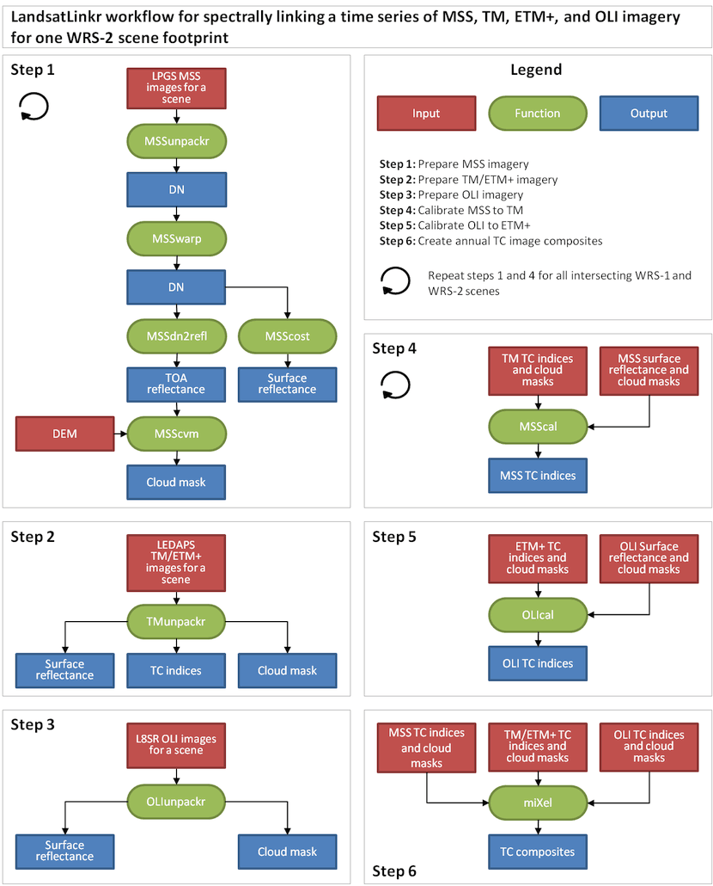

LandsatLinkr was developed in the R programming language and is run with a single
function call to provide easy use for users across the whole range of R experience.
Landsat images from MSS, TM, ETM+, and OLI sensors are downloaded and placed into a specific
directory structure and then run_landsatlinkr() is typed into the R console command
line. A few questions are interactively asked of the user regarding what process
to run and where the downloaded image data resides. Upon execution of the program,
LandsatLinkr will automatically run through all procedures for a given step defined
in the LLR workflow (figure below) for all images in a given directory. For a detailed
description of each procedure see the function links below the workflow diagram.

LLR procedures - click on function buttons for more information
Step 1: Prepare MSS imagery
|
Untar/unzip, reproject/resample, stack MSS images |
|
Improve georegistration for select MSS images |
|
Convert MSS image reflectance units from DN to top-of-atmosphere reflectance |
|
Apply DOS atmospheric correction and convert reflectance units from DN to surface reflectance |
|
Make cloud and shadow masks for MSS imagery |
Step 2: Prepare TM/ETM+ imagery
|
Untar/unzip, reproject, stack, and apply Tasseled Cap transformations |
Step 3: Prepare OLI imagery
|
Untar/unzip, reproject, and stack OLI L8SR imagery |
Step 4: Calibrate MSS to TM
|
Spectrally calibrate MSS images to TM images |
Step 5: Calibrate OLI to ETM+
|
Spectrally calibrate OLI images to ETM+ images |
Step 6: Create image composites
|
Create cloud-free yearly image composites |